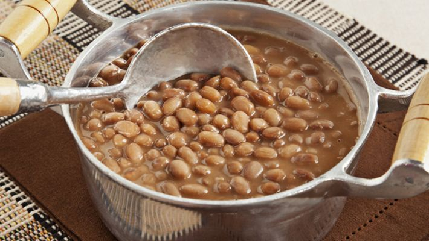

Feijão

Delicioso feijão.
Ingredientes
- 300 gramas de Feijão
- Alho
- Sal
Modo de preparo
- Cozinhe o feijão na panela de presão por 50 minutos
- Amasse o alho junto com o sal
- Em uma panela com um pouco de óleo adicione a mistura de sal e alho e coloque o feijão cozido
- Acrescente um pouco de água e deixe cozinhando em fogo baixo ate engrossar o caldo